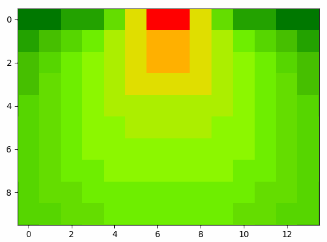

Home - Codice
Modello di probabilità di finalizzazione nel calcio
Distanza dalla porta
Teorema di Pitagora

Angolo rispetto alla porta
Arcotangente del coefficiente angolare
Media distanza - angolo
Media aritmetica sulle probabilità normalizzate
Angolo formato dalla porta
Teorema del coseno: cosγ = (a2 + b2 - c2) / 2ab

Grafico 2d - grafico 3d